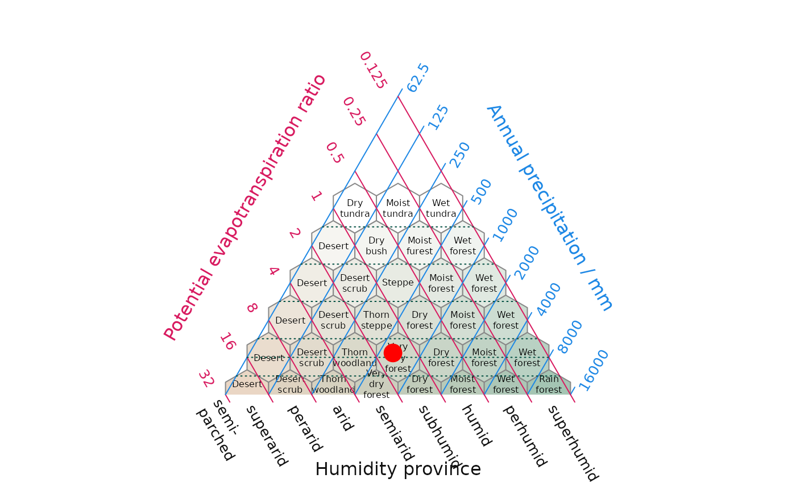
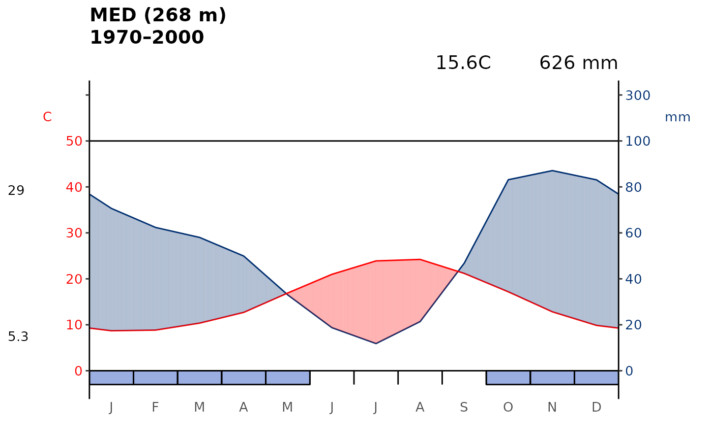
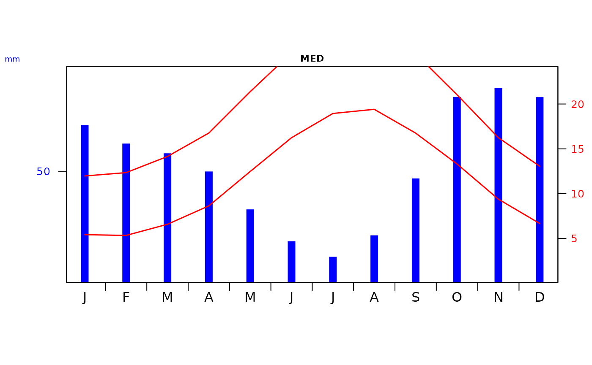

Exploring the Italian biome data sets
James L. Tsakalos (james.tsakalos@gmail.com), Martin R. Smith, Frederico Luebert, Ladislav Mucina
2023-06-27
Source:vignettes/Italian_Biomes.Rmd
Italian_Biomes.RmdGeneral description of the Italian Biome data sets
climenv includes three data sets that feature Biome
information for Italy. The data sets include it_py,
it_pt and it_data. The prefix it stands for
“Italy”. Within it_py the Biomes are represented by
polygons (py), within it_pt the Biomes have been sampled by
a gridded (~5km) point (pt) data set. Lastly, it_data is
the output of the ce_extract() function generated using
WorldClim 2 climate and Mapzen digital elevation.
library(climenv)
library(terra)
#library(fs)
#library(raster)
#library(dplyr)
#library(sf)
# Lets begin by visualising the data
data("it_py")
plot(it_py, key.pos = NULL, border= NA, main = "Global Biomes polygons")

# Due to downloading time we have provided the extracted data in the package
## ce_download("C/example_output..", c_source = "WorldClim", location = it_py)
## ?ce_extract("C/example_output", "C/example_output/elev", it_py, "GB")
# Lets have a look at the extracted data
data("it_data")
plot_h(it_data, "MED")
plot_wl(it_data, "MED")
plot_c(it_data, "MED")